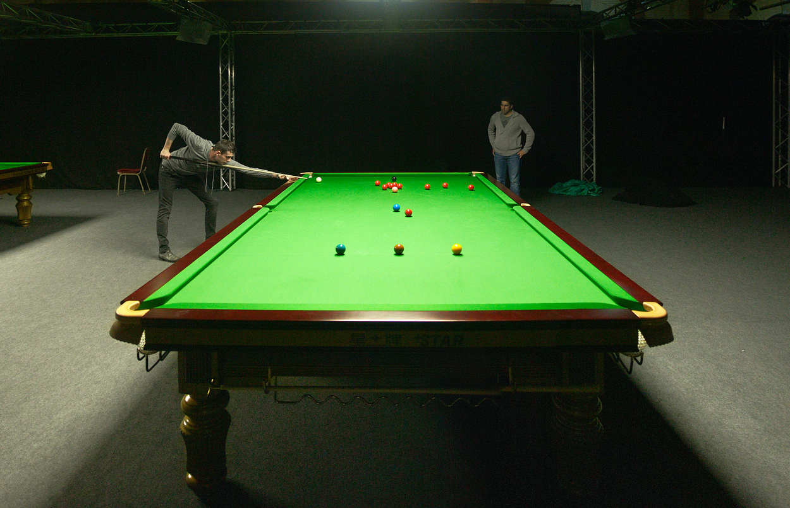
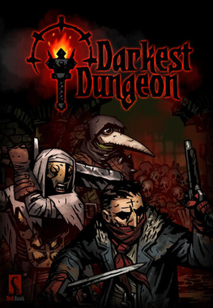
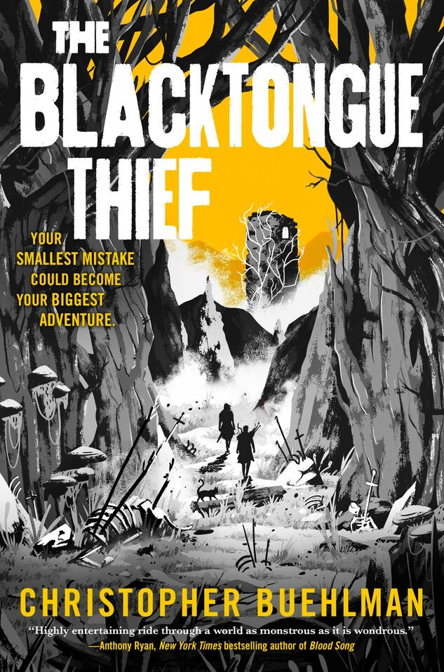

Snooker




Tärkeimmäksi harrastuksekseni nostaisin snookerin, joka vaatii onnistuakseen niin paljon keskittymistä, että pelaaminen tyhjentää hyvin pään. Ylhäälle olen lisännyt kuvat lempikirjastani ja suosikkipelistäni. Itse olen kokenut, että hyvät harrastukset vievät huomion kokonaan, joka tuolloin tuntuu tukevan palautumista paremmin.